Heroes examples
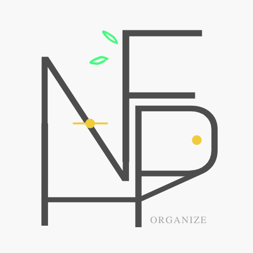
NutryFoodPantry
Manual de usuario
1.- Dar de alta tu número telefonico en Twilio
- Registrar, en los contactos del télefono, el siguiente numero: +1 415 523 8886
- Nombrar el contacto como 'Twilio'
- Enviar un mensaje de WhatsApp al número ya registrado, el mensaje debe contener el siguiente código: join stared-pleasant
- Para confirmar que su número ha sido dado de alta, Twilio le enviará un mensaje
2.- Registro. Crear una cuenta
- 1Seleccionar la opción 'Registrate' la cual se encuentra en la parte inferior del modal de inicio de sesión
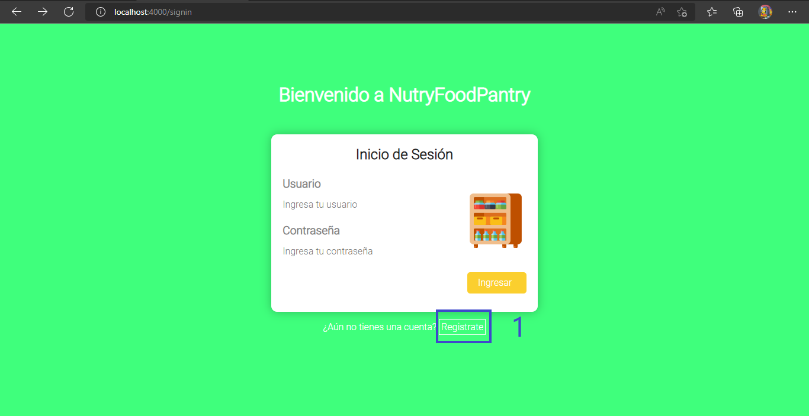
3.- Registro. Ingresar los datos
- 1Ingresar un 'nombre de usuario', este campo no debe ser igual al campo 'nombre'
- 2Ingresar el nombre real del usuario
- 3Ingresar el apellido paterno del usuario
- 4Ingresar el apellido materno del usuario
- 5Crear una contraseña, estas deben de coincidir
- 6Ingresar un numero télefonico sin colocar el código del pais
- 7Seleccionar la opción 'Verificar' para validar el formulario
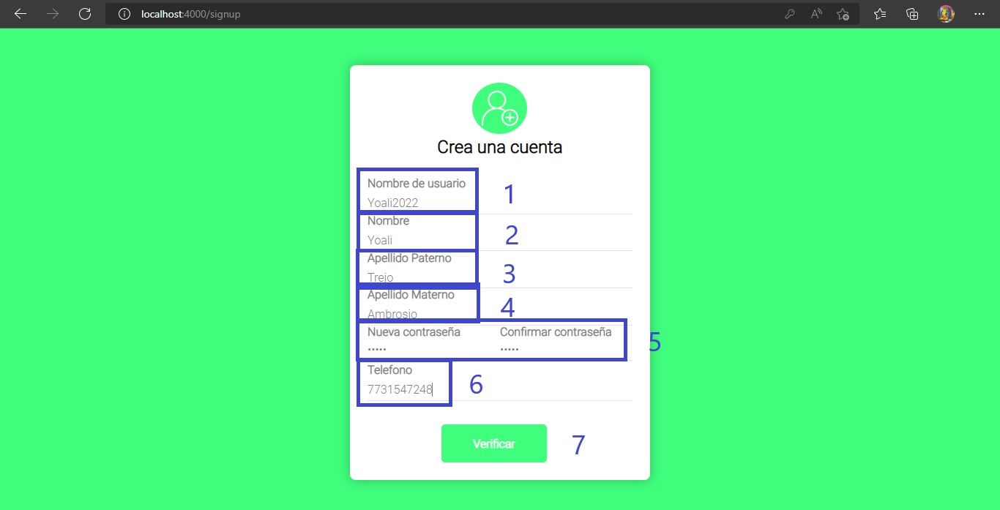
4.- Registro. Crear la cuenta de usuario
- 1Seleccionar la opción 'Registrarse' para crear finalmente una cuenta de usuario
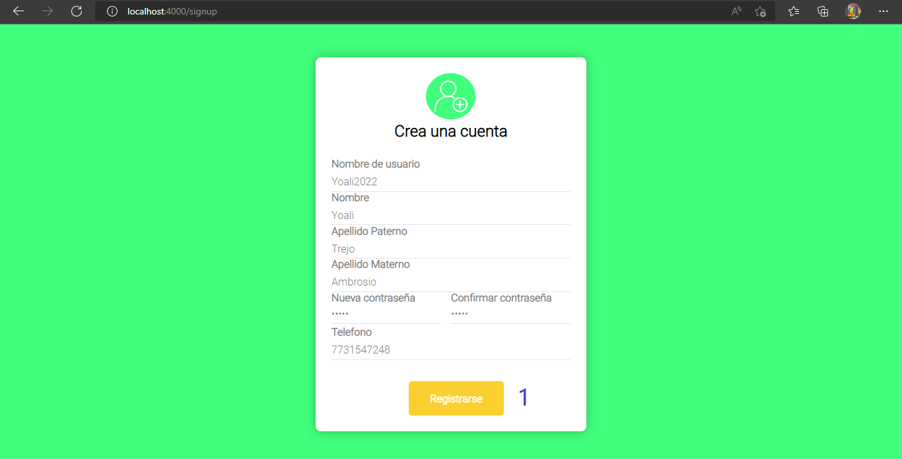
5.- Dashboard
- 1Es la alacena que almacena todos los productos de la cocina
- 2Indica que aún no se han creado eventos. Cuando realizamos un evento, necesitamos algunos productos para la realización de platillos
- 3Permite crear un evento
- 4Se refiere a las configuraciones de la cuenta. Permite actualizar el número teléfonico o eliminar la cuenta del usuario
- 5Permite cerrar sesión
- 6Muestra las opciones de 'Configuración' o 'Agregar evento o lista'
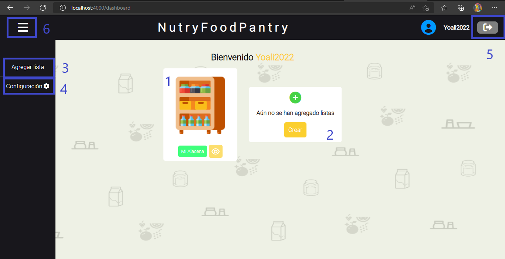
6.- Dashboard. Crear un evento
- Crear un evento
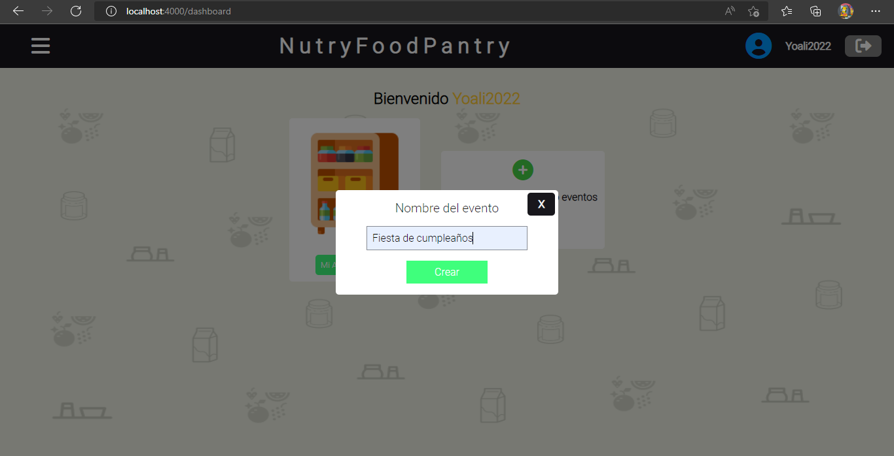
7.- Dashboard. Evento creado por el usuario
- Evento creado cuyo nombre es: 'Fiesta de cumpleaños'
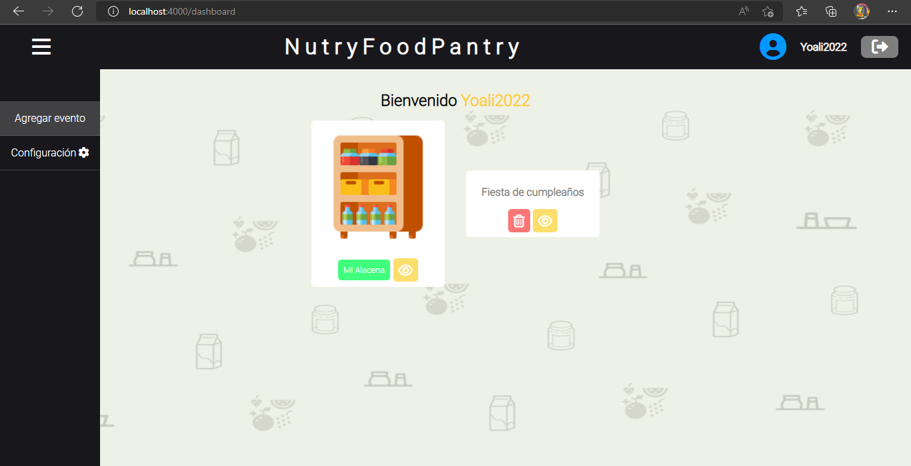
8.- Evento. Navegando en la interfaz del evento creado
- Navegando dentro del evento creado en el paso 6
- 1Permite regresar a la interfaz 'Dashboard'
- 2Permite registrar un producto
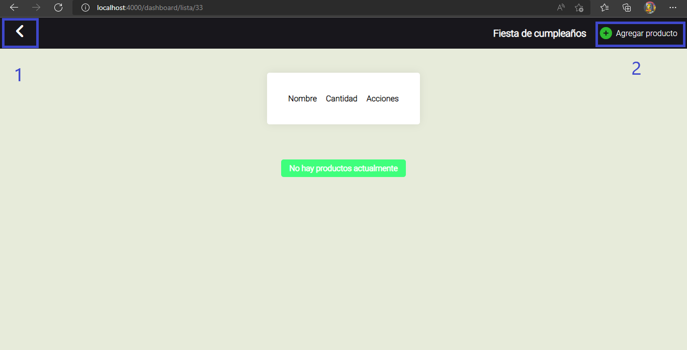
9.- Evento. Agregando productos que requieren fecha de caducidad
- Cada que se agregue un producto, el sistema los va a categorizar y dependiendo de la categoria, se solicitará o no se solicitará la fecha de caducidad
- Ingresando un producto procesado, por lo que se requiere ingresar la fecha de caducidad
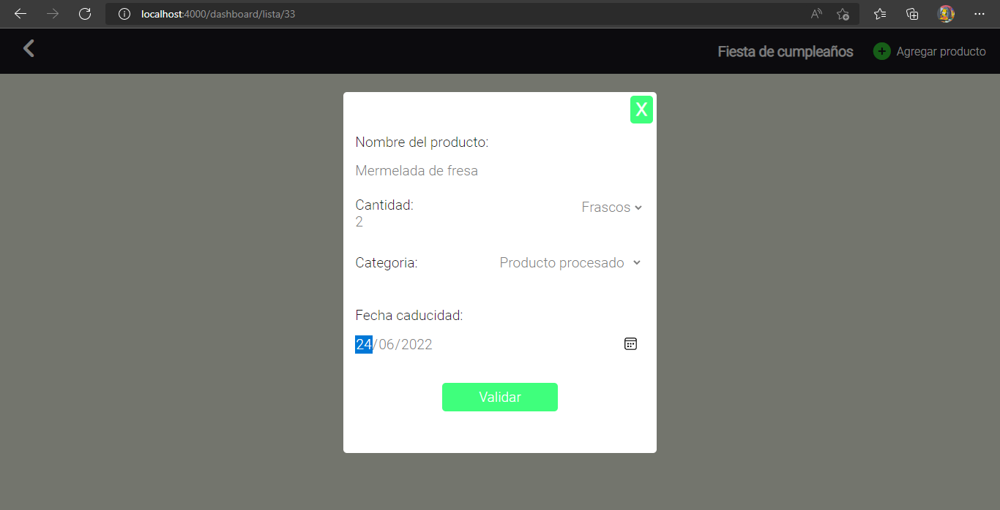
10.- Evento. Agregando productos que no requieren fecha de caducidad
- Cada que se agregue un producto, el sistema los va a categorizar y dependiendo de la categoria, se solicitará o no se solicitará la fecha de caducidad
- Ingresando un producto perteneciente a la categoría 'Frutas y verduras', por lo que no se requiere ingresar la fecha de caducidad
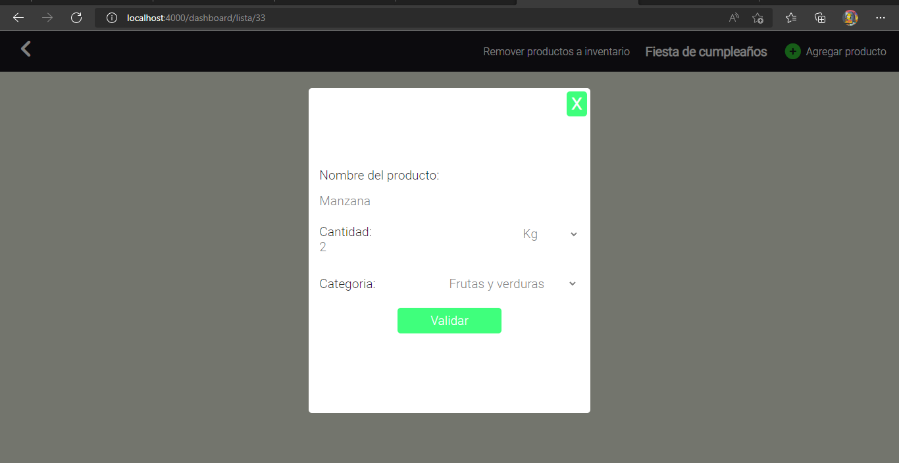
11.- Evento. Remover, actualizar y eliminar productos
- 1Permite mover los productos almacenados en un evento, hacia el inventario 'Mi Alacena'
- 2Permite actualizar los datos o eliminar un producto
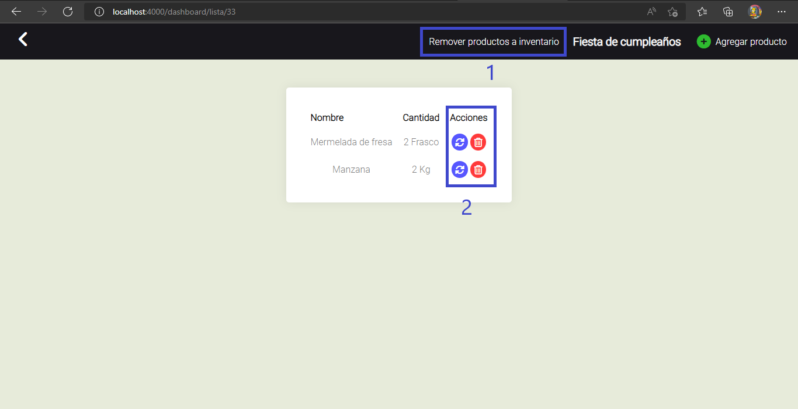
12.- Mi Alacena. Funcionalidades
- Tiene la función de almacenar todos los productos de la cocina y aquellos productos sobrantes al termino de un evento
- 1Permite volver a la interfaz anterior, en este caso, 'Dashboard'
- 2Permite generar una lista de compra de todos los productos a punto de agotarse. Esto en base a la cantidad mínima del producto establecidad por el usuario
- 3Permite notificar al usuario cuando un producto esta a punto de caducar. Esto a traves de mensajes de WhatsApp
- 4Permite agregar productos para la cocina
- 5Permite eliminar o actualizar los datos de un producto
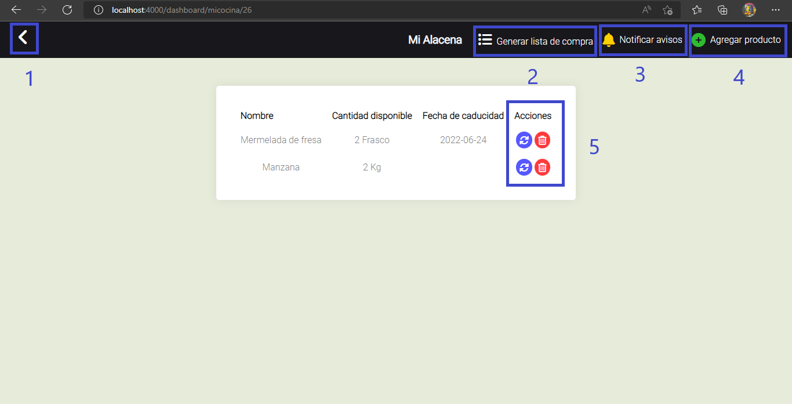
13.- Mi Alacena. Agregar productos o actualizar la cantidad minima
- Resulta indispensable que una vez los productos de un determinado evento, hayan sido removidos a 'Mi Alacena', es importante actualizar los datos de esos productos, es decir, la cantidad minima. Asi mismo se puede agregar un nuevo producto que no necesariamente haya sido almacenado en un evento
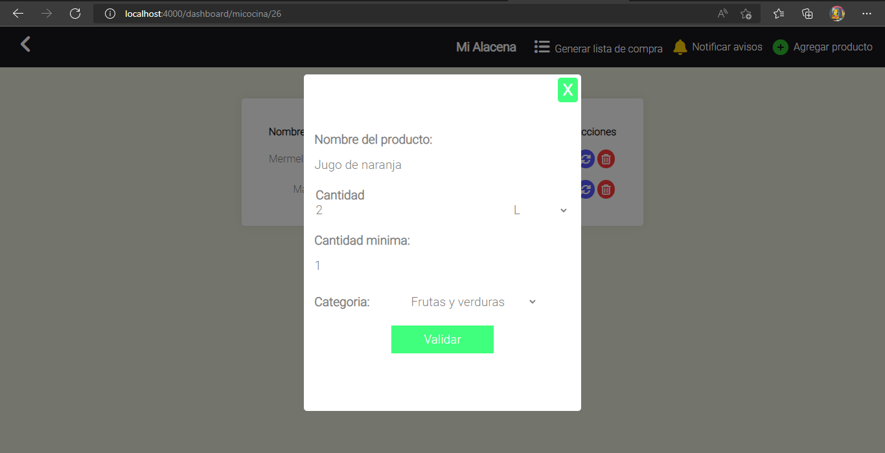
- Actualizando la cantidad mínima de un producto que anteriormente estaba almacenado en un evento
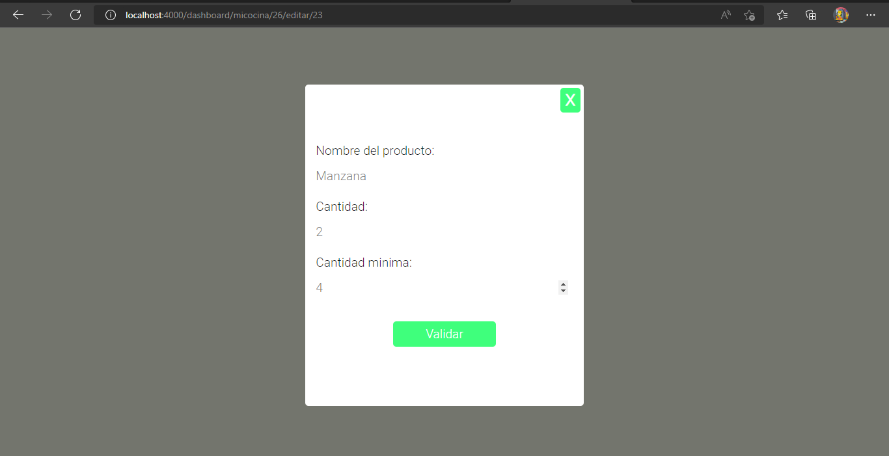
14.- Lista de compra
- Al seleccionar la opción 'Generar lista de compra' del paso 12, se genera una lista de productos a punto de agotarse
- 1Productos de la alacena a punto de agotarse
- 2Opción para volver a la interfaz 'Mi Alacena'
- 3Permite enviar un mensaje de WhatsApp al numero del usuario con la lista de productos a punto de agotarse
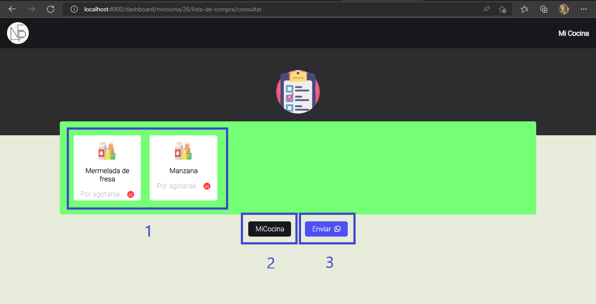
15.- Notificar la caducidad de un producto
- Monitorea cada dia los productos almacenados en la alacena y posteriormente notifica al usuario los productos a punto de caducarse
- 1Activa las notificaciones a traves de WhatsApp
- 2Desactiva las notificaciones
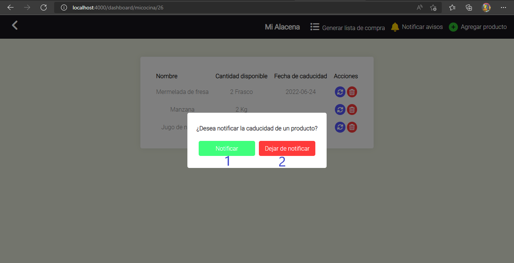
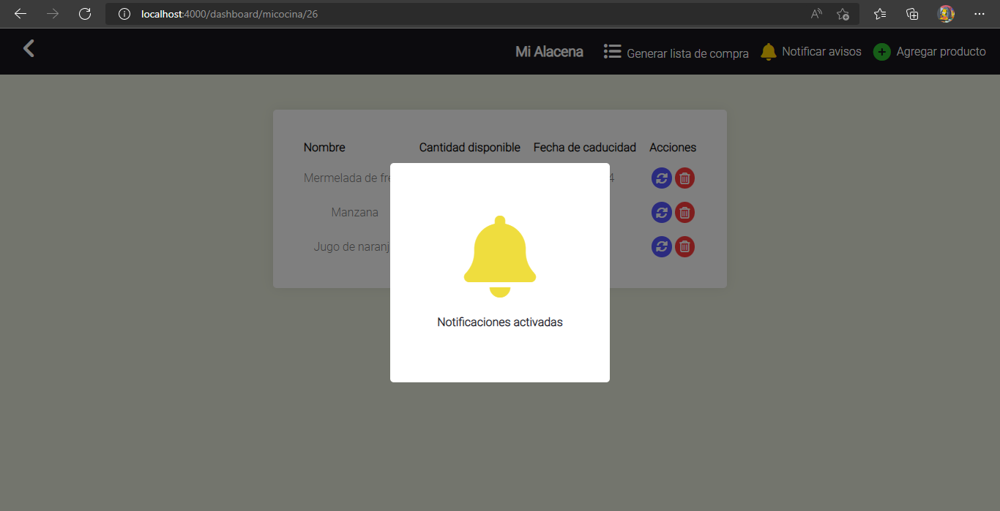